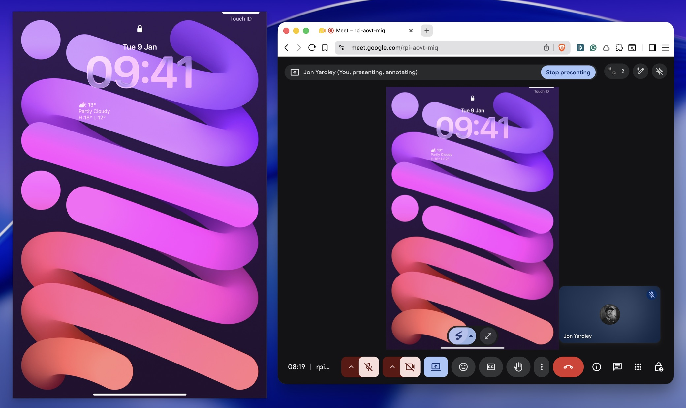

Delete the QuickTime ritual.
Plug in. Pick the window. Draw. SharePad handles the rest, every call.
Download SharePadmacOS 14+ · signed & notarized · free & open source
Plug in your iPad over USB and a clean, aspect-locked window appears — instantly. Pick it in any call’s “Share window” menu. No more per-call QuickTime ritual.
The SharePad window on the left; Google Meet transmitting that exact window on the right. Full-size content — not a webcam tile.

SharePad lives in your menu bar and reacts to the cable. There’s nothing to launch mid-meeting.
Connect over USB. SharePad detects it automatically — no app to open on either device.
A borderless, aspect-locked window opens on your Mac, mirroring the iPad in real time.
In Zoom, Meet or Teams, choose “Share window” → SharePad. Your drawing fills the frame.
Virtual-camera apps render your iPad as a postage-stamp webcam tile. SharePad shares it as a proper window, so whiteboarding fills the screen.
The window keeps the iPad’s exact ratio, so nothing is letterboxed, stretched, or cropped.
It auto-connects on plug-in and auto-hides on unplug. Wake from sleep just works.
Browser-based Meet/Teams only transmit a visible window — one toggle pins it so the share never goes black.
A thumbnail in the popover confirms exactly what your call sees — before you hit share.
SharePad pipes the iPad’s feed straight into a local window. There’s no account, no cloud, and no network in the loop at all.
It uses the Camera permission to read the connected iPad — and nothing else.
The video connection is wired by hand so macOS never even prompts for the mic.
100% local. Frames live on the GPU and are gone the moment you unplug.
SharePad is distributed directly, not through the Mac App Store. Here’s exactly what that means.
Plug in. Pick the window. Draw. SharePad handles the rest, every call.
Download SharePad